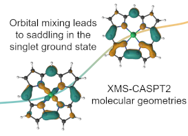
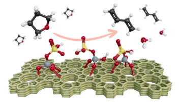

Using multiple computational methods in combination leads to fundamental insights in complex systems: where the complexity may arise either from the number of atoms or from strong electron correlation. Our research group tackles diverse problems in transition metal chemistry, f-element chemistry, and porous materials. Applications include controlling spin in transition metal complexes, contributing to solving the f-electron challenge, designing next-generation catalysts through collaboration, sustainable polymers, and more.
CASPT2 Molecular Geometries in Transition Metal Chemistry
Recent technological development of fully internally contracted gradients for second-order multireference complete active space methods (CASPT2) has enabled the geometry optimization of medium to large transition metal complexes. Our group has focused on using these methods to model the molecular geometries of iron spin-crossover complexes, copper corrole complexes, and Cr–Cr multiple bonds with CASPT2. While DFT geometries are often quite good for minima, this can break down when the electronic structure is best described with a multireference method. By performing geometry optimizations for the correct multireference ground state, one can ensure that the potential energy surface is described appropriately and avoid needing to take care with functional choice. This work is facilitated by implementations in the BAGEL program package, of which we are developers.
Molecular geometry and electronic structure of copper corroles
Copper corroles are known for their unique multiconfigurational electronic structures in the ground state, which arise from the transfer of electrons from the π orbitals of the corrole to the d orbital of copper. While density functional theory (DFT) provides reasonably good molecular geometries, the determination of the ground spin state and the associated energetics is heavily influenced by functional choice, particularly the percentage of Hartree--Fock exchange. Using the XMS-CASPT2 method functional choice can be eliminated albeit at a computational cost. The molecular geometries and electronic structures of both the unsubstituted and $meso$-triphenyl copper corroles were investigated. A minimal active space was employed for structural characterization, while larger active spaces are required to examine the electronic structure. The CASPT2 investigations conclusively identify the ground electronic state as a multiconfigurational singlet (S0) with three dominant electronic configurations, in its lowest energy and characteristic saddled structure. In contrast, the planar geometry corresponds to the triplet state (T0), which is approximately 5 kcal/mol higher in energy compared to the S0 state for both the bare and substituted copper corroles. Notably, the planarity of the T0 geometry is reduced in the substituted corrole compared to the unsubstituted one. By analyzing the potential energy surface (PES) between the S0 and T0 geometries using XMS-CASPT2, the multiconfigurational electronic structure is shown to transition towards a single electron configuration as the saddling angle decreases (i.e.,} as one approaches the planar geometry). Despite the ability of the functionals to reproduce the minimum energy structures, only the TPSSh-D3 PES is reasonably close to the XMS-CASPT2 surface. Significant deviations along the PES are observed with other functionals. Read more here
Importance of Dispersion in the Molecular Geometries of Mn(III) Spin-Crossover Complexes
The computational investigation of the molecular geometries of a pair of manganese(III) spin-crossover complexes is reported. For the geometry of the quintet high-spin state, density functionals significantly overestimate Mn–Namine bond distances, although the geometry for the triplet intermediate-spin state is well described. Comparisons with several wave function-based methods demonstrate that this error is due to the limited ability of commonly used density functionals to recover dispersion beyond a certain extent. Among the methods employed for geometry optimization, restricted open-shell Møller–Plesset perturbation theory (MP2) appropriately describes the high-spin geometry but results in a slightly shorter Mn–O distance in both spin states. On the other hand, extended multistate complete active space second-order perturbation theory (XMS-CASPT2) provides a good description of the geometry for the intermediate-spin state but also sufficiently recovers dispersion, performing well for the high-spin state. Despite the fact that the electronic structure of both spin states is dominated by one-electron configuration, XMS-CASPT2 offers a balanced approach, leading to molecular geometries with much better agreement with experiment than MP2 and DFT. A scan along the Mn–Namine bond demonstrates that for these complexes coupled cluster methods (i.e., DLPNO-CCSD(T)) also yield bond distances in agreement with experiment while multiconfiguration pair density functional theory (MC-PDFT) is unable to recover dispersion well enough, analogous to single-reference DFT. Read more here
Computational Spectroscopy of the Cr–Cr Bond in Coordination Complexes
We report the accurate computational vibrational analysis of the Cr–Cr bond in dichromium complexes using second-order multireference complete active space methods (CASPT2), allowing direct comparison with experimental spectroscopic data both to facilitate interpreting the low-energy region of the spectra and to provide insights into the nature of the bonds themselves. Recent technological development by the authors has realized such computation for the first time. Accurate simulation of the vibrational structure of these compounds has been hampered by their notorious multiconfigurational electronic structure that yields bond distances that do not correlate with bond order. Some measured Cr–Cr vibrational stretching modes, ν(Cr2), have suggested weaker bonding, even for so-called ultrashort Cr–Cr bonds, while others are in line with the bond distance. Here, we optimize geometries and compute ν(Cr2) with CASPT2 for three well-characterized complexes, Cr2(O2CCH3)4(H2O)2, Cr2(mhp)4, and Cr2(dmp)4. We obtain CASPT2 harmonic ν(Cr2) modes in good agreement with experiment at 282 cm-1 for Cr2(mhp)4 and 353 cm-1 for Cr2(dmp)4, compute 50Cr and 54Cr isotope shifts, and demonstrate that the use of the so-called IPEA shift leads to improved Cr–Cr distances. Additionally, normal mode sampling was used to estimate anharmonicity along ν(Cr2), leading to an anharmonic mode of 272 cm-1 for Cr2(mhp)4 and 333 cm-1 for Cr2(dmp)4. Read more here
Computational Modeling in f-element Chemistry
The 5f-orbitals and 6d-orbitals are well-known to engage in bonding motifs with multiconfigurational electronic structures and spin-orbit effects are frequently large. We perform state-of-the-art calculations that can be systematically improved on systems ranging from small molecules to large coordination complexes containing actinides. Our goal is to use higher-level methods than traditionally applied in the literature. We make synergistic comparisons between theory and highly accurate spectroscopic measurements. By computing properties using fully relativistic CASPT2 methods based on the Dirac equation (Dirac-CASPT2), we can understand the importance of the different relativistic effects as well as characterize the contributions from non-dynamic and dynamic correlation. Specifically, we study organoactinide complexes in collaboration with synthetic chemists, small molecules in collaboration with spectroscopists, and examine systematically chosen systems in collaboration with theoretical chemists developing new methods.
Actinide arene-metalates: ion pairing effects on the electronic structure of unsupported uranium–arenide sandwich complexes
Addition of [UI2(THF)3(μ-OMe)]2·THF (2·THF) to THF solutions containing 6 equiv. of K[C14H10] generates the heteroleptic dimeric complexes [K(18-crown-6)(THF)2]2[U(η6-C14H10)(η4-C14H10)(μ-OMe)]2·4THF (118C6·4THF) and {[K(THF)3][U(η6-C14H10)(η4-C14H10)(μ-OMe)]}2 (1THF) upon crystallization of the products in THF in the presence or absence of 18-crown-6, respectively. Both 118C6·4THF and 1THF are thermally stable in the solid-state at room temperature; however, after crystallization, they become insoluble in THF or DME solutions and instead gradually decompose upon standing. X-ray diffraction analysis reveals 118C6·4THF and 1THF to be structurally similar, possessing uranium centres sandwiched between bent anthracenide ligands of mixed tetrahapto and hexahapto ligation modes. Yet, the two complexes are distinguished by the close contact potassium-arenide ion pairing that is seen in 1THF but absent in 118C6·4THF, which is observed to have a significant effect on the electronic characteristics of the two complexes. Structural analysis, SQUID magnetometry data, XANES spectral characterization, and computational analyses are generally consistent with U(IV) formal assignments for the metal centres in both 118C6·4THF and 1THF, though noticeable differences are detected between the two species. For instance, the effective magnetic moment of 1THF (3.74 μB) is significantly lower than that of 118C6·4THF (4.40 μB) at 300 K. Furthermore, the XANES data shows the U LIII-edge absorption energy for 1THF to be 0.9 eV higher than that of 118C6·4THF, suggestive of more oxidized metal centres in the former. Of note, CASSCF calculations on the model complex {[U(η6-C14H10)(η4-C14H10)(μ-OMe)]2}2− (1*) shows highly polarized uranium–arenide interactions defined by π-type bonds where the metal contributions are primarily comprised by the 6d-orbitals (7.3 ± 0.6%) with minor participation from the 5f-orbitals (1.5 ± 0.5%). These unique complexes provide new insights into actinide–arenide bonding interactions and show the sensitivity of the electronic structures of the uranium atoms to coordination sphere effects. Read more here
Quantifying the Influence of Covalent Metal-Ligand Bonding on Differing Reactivity of Trivalent Uranium and Lanthanide Complexes
Qualitative differences in the reactivity of trivalent lanthanide and actinide complexes have long been attributed to differences in covalent metal-ligand bonding, but there are few examples where thermodynamic aspects of this relationship have been quantified, especially with U3+ and in the absence of competing variables. Here we report a series of dimeric phosphinodiboranate complexes with trivalent f-metals that show how shorter-than-expected U&ndasy;B distances indicative of increased covalency give rise to measurable differences in solution deoligomerization reactivity when compared to isostructural complexes with similarly sized lanthanides. These results, which are in excellent agreement with supporting DFT and QTAIM calculations, afford rare experimental evidence concerning the measured effect of variations in metal-ligand covalency on the reactivity of trivalent uranium and lanthanide complexes. Read more here
Uranium(III)-carbon multiple bonding supported by arene delta-bonding in mixed-valence hexauranium nanometre-scale rings
Despite the fact that non-aqueous uranium chemistry is over 60 years old, most polarised- covalent uranium-element multiple bonds involve formal uranium oxidation states IV, V, and VI. The paucity of uranium(III) congeners is because, in common with metal-ligand multiple bonding generally, such linkages involve strongly donating, charge-loaded ligands that bind best to electron-poor metals and inherently promote disproportionation of uranium(III). Here, we report the synthesis of hexauranium-methanediide nanometre-scale rings. Combined experimental and computational studies suggest overall the presence of formal uranium(III) and (IV) ions, though electron delocalisation in this Kramers system cannot be definitively ruled out, and the resulting polarised-covalent U = C bonds are supported by iodide and δ-bonded arene bridges. The arenes provide reservoirs that accommodate charge, thus avoiding inter-electronic repulsion that would destabilise these low oxidation state metal- ligand multiple bonds. Using arenes as electronic buffers could constitute a general synthetic strategy by which to stabilise otherwise inherently unstable metal-ligand linkages. Read more here
Improving Sustainable Polymers with Computational Insights
Within the NSF Center for Sustainable Polymers (NSF CSP), we perform computational modeling in combination with experiment to provide molecular-level insights to reaction mechanisms in order to guide the design of the next generation of catalysts. By means of a combination of density functional theory (DFT) and classical simulations, we address questions arising from experiments performed in the Center. We are currently collaboration with the Tolman group at Washington University in St. Louis, the Dauenhauer and Tonks groups at the University of Minnesota, and the Kalow group at Northwestern University.
Ligand Effects on Decarbonylation of Palladium-Acyl Complexes
The influences of perturbations of supporting phosphine ligands on the dehydrative decarbonylation of (Ln)PdII(Cl)-hydrocinnamoyl complexes (L = PtBu3, n = 1; L = PPh3, n = 2; L = dppe, n = 1) to yield styrene were studied through combined experiment and theory. Abstraction of chloride from the complexes by silver and zinc salts, as well as sodium tetrakis[3,5-bis(trifluoromethyl)phenyl]borate, enhanced the efficiency of styrene formation, according to the following trend in L: PtBu3 > dppe > PPh3. DFT calculations corroborated the experimental findings and provided insights into the ligand influences on reaction step barriers and transition state structures. Key findings include the following: a stable intermediate forms after chloride abstraction, from which β-hydride elimination is most affected by ligand choice, the low coordination number for the PtBu3 case lowers reaction barriers for all steps, and the trans disposition of two ligands for L = PPh3 contributes to the low efficiency for styrene production in that case. Read more here
On the Spatial Design of Co-Fed Amines for Selective Dehydration of Methyl Lactate to Acrylates
Co-feeding an inert and site-selective chemical titrant provides desirable selectivity tuning when titrant adsorption is favored over side reaction pathways on a solid acid catalyst. Here, a selectivity enhancement from 61 to 84 C % was demonstrated for methyl lactate dehydration to methyl acrylate and acrylic acid over a NaY zeolite catalyst using amines as the co-fed titrants to suppress side reactions on in situ-generated Brønsted acid sites (BASs). The effectiveness of BAS titration was evaluated by considering both the basicity and steric properties of the titrant molecule with the goal to maximize the selectivity enhancement. The presence of electron-donating alkyl functional groups not only enhances amine basicity but also introduces additional steric constraints to the molecule with respect to the pore dimensions of the NaY zeolite. While higher basicity of titrant amines favors stronger adsorption on BASs, steric limitations hinder site binding through contributions from internal diffusion limitations and local steric repulsion between the titrant and the zeolite wall around the BAS. Titrant bases with proton affinities above ∼1040 kJ/mol and sizes below 85% of the NaY supercage window or pore diameter are predicted to afford dehydration selectivities above 90 C % to acrylate products. Read more here
Sulfurous Zeosils for Dehydra-Decyclization of Tetrahydrofuran to Renewable Butadiene
Renewable 1,3-butadiene (1,3-BD, C4H6) was synthesized from the tandem decyclization and dehydration of biomass-derived tetrahydrofuran (THF) on weak Brønsted acid zeolite catalysts. 1,3-BD is a highly solicited monomer for the synthesis of rubbers and elastomers. Selective conversion of THF to 1,3-BD was recently measured on phosphorus-modified siliceous zeolites (P-zeosils) at both high and low space velocities, albeit with low per-site catalytic activity. In this work, we combined kinetic analyses and QM/MM calculations to evaluate the interaction of THF with the various Brønsted acid sites (BAS) of Boron (B)-, Phosphorus (P)-, and Sulfur (S)-containing silicalite-1 catalysts toward a dehydra-decyclization pathway to form 1.3-BD. Detailed kinetic measurements revealed that all three catalysts exhibited high selectivity to 1,3-BD ca. 64-96% in the order of S-MFI > P-MFI > B-MFI at a given temperature (360 °C). Notably, the S-MFI maintained a selectivity > 90% for evaluated all process conditions. The computational results suggested that the nature of the Brønsted acid sites and the adsorption energetics (relative THF-acid site interaction energies) are distinct in each catalyst. Additionally, the protonation of THF can be improved with the addition of a water molecule acting as a proton shuttle, particularly in S-MFI. Overall, S-containing zeosils exhibited the ability to control reaction pathways and product distribution in dehydra-decyclization chemistry optimization within microporous zeolites, providing another alternative weak-acid catalytic material. Read more here